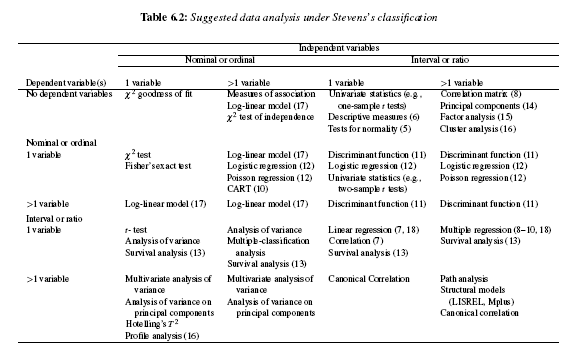
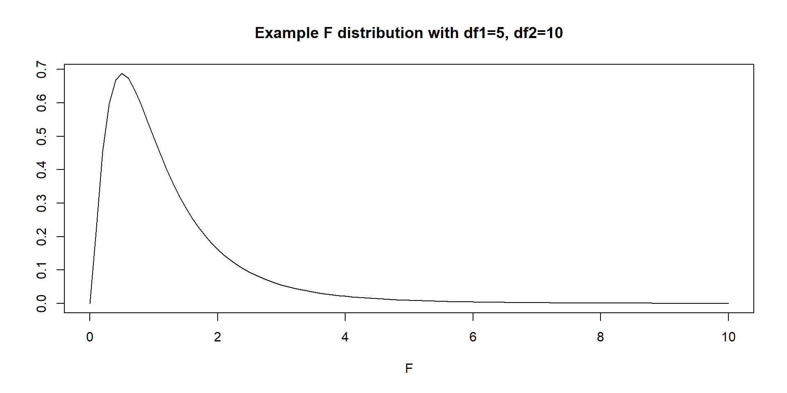
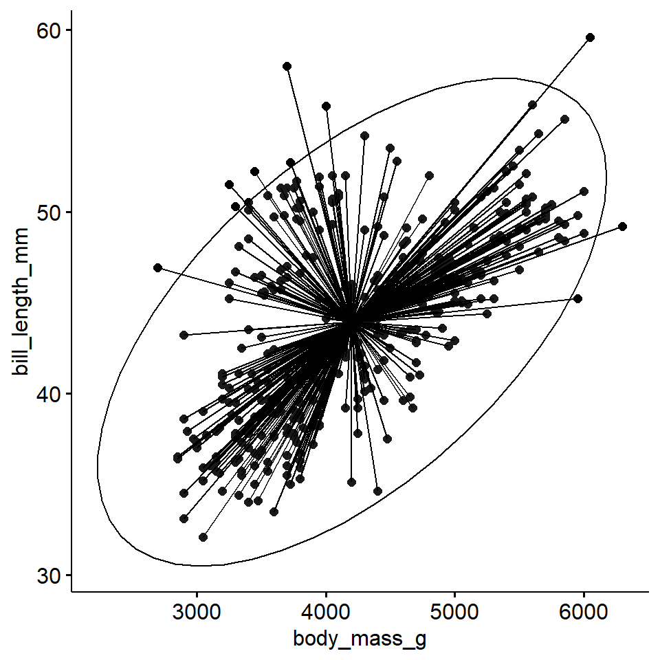

This set of slides is really long. I recommend using the navigation menu (hamburger menu in the bottom left) to skip to the relevant section.
Which analyseses to perform?
Moving from:
“What descriptive measures should be used to examine the data”
to
“What statistical analyses should be performed?
REF: PMA6 Chapter 6
Why selection can be difficult
Classroom instruction tends to present methods in logical order from a learning perspective. Building from simple to more complex. Exposure to complex models limited.
Real life data often contain a mixture of data types, missing data and complex patterns. This can make the choice of analysis somewhat arbitrary at times.
Two trained statisticians presented with the same data will often approach the analysis from different perspectives, and run different analyses depending on what assumptions they are willing to make.
Not always clear
The primary assumption of most standard statistical procedures is that the records are independent of each other.
Often program evaluation relies on paired measurements before and after a certain exposure or treatment (pre-post).
In this case, the approach is to calculate a pairwise difference for each individual and compare the average difference to 0 (any change vs no change).
For the purposes of this class, we will only concern ourselves with independent groups.
Repeated measures is a topic typically taught in MATH 456 (but also covered in Chapter 18 of PMA6)
Choose your adventure
Table 6.2 in PMA6 shows which statistical analyses procedures are appropriate depending on the combination of explanatory and response variable.

Case study practice
Go to the HackMD collaborative notes on Choosing appropriate analysis and work in pairs to answer an assigned question.
A good way to think about all statistical models is that the observed data comes from some true model with some random error.
DATA = MODEL + RESIDUAL
The MODEL is a mathematical formula (like \(y = f(x)\)). The formulation of the MODEL will change depending on the number of, and data types of explanatory variables. One goal of inferential analysis is to explain the variation in our data, using information contained in other measures.
Difference \(\bar{x}_{1} - \bar{x}_{2}\) is normally distributed
Variances are approximately the same
\(H_{0}: \mu_{1} - \mu_{2} = 0\): There is no difference in the averages between groups.
\(H_{A}: \mu_{1} - \mu_{2} \neq 0\): There is a difference in the averages between groups.
Example: BMI vs smoking
We would like to know, is there convincing evidence that the average BMI differs between those who have ever smoked a cigarette in their life compared to those who have never smoked?
Nitty gritty detail
For the purposes of learning, you will be writing out each step in the analysis in depth. As you begin to master these analyses, it is natural to slowly start to blend and some steps. However it is important for you to have a baseline reference.
Smokers have on average BMI of 28.8, smaller than the average BMI of non-smokers at 29.7. Non-smokers have more variation in their weights (7.8 vs 7.3lbs), but the distributions both look normal, if slightly skewed right.
3. Write the relationship you want to examine in the form of a research question.
Null Hypothesis: There is no difference in the average BMI between smokers and non-smokers.
Alternate Hypothesis: There is a difference in the average BMI between smokers and non-smokers.
4. Perform an appropriate statistical analysis using Dr D’s 4 step method.
a. Define parameters
Let \(\mu_{1}\) be the average BMI for smokers, and \(\mu_{2}\) be the average BMI for non-smokers
b. State the null and alternative hypothesis as symbols
c. State and justify the analysis model. Check assumptions.
We are comparing the means between two independent samples. A Two-Sample T-Test for a difference in means will be conducted. The assumptions that the groups are independent is upheld because each individual can only be either a smoker or non smoker. The difference in sample means \(\bar{x}_{1}-\bar{x}_{2}\) is normally distributed - this is a valid assumption due to the large sample size and that differences typically are normally distributed. The observations are independent, and the variances are roughly equal (67/44 = 1.5 is smaller than 2).
d. Conduct the test and make a decision about the plausibility of the alternative hypothesis.
Show the code
t.test(BMI ~ eversmoke_c, data=addhealth)
Welch Two Sample t-test
data: BMI by eversmoke_c
t = 3.6937, df = 3395.3, p-value = 0.0002245
alternative hypothesis: true difference in means between group Never Smoked and group Smoked at least once is not equal to 0
95 percent confidence interval:
0.3906204 1.2744780
sample estimates:
mean in group Never Smoked mean in group Smoked at least once
29.67977 28.84722
There is strong evidence in favor of the alternative hypothesis. The interval for the differences (0.4, 1.3) does not contain zero and the p-value = .0002.
5. Write a conclusion in context of the problem. Include the point estimates, confidence interval for the difference and p-value.
On average, non-smokers have a significantly higher 0.82 (0.39, 1.27) BMI compared to smokers (p=.0002).
Analysis of variance assesses whether the means of two or more groups are statistically different from each other. Does knowing what group an observation is in tell you about the location of the data?
for \(i=1, \ldots, I\) factor levels and \(j = 1, \ldots, n_{i}\) subjects within each factor level. The random error terms are independently and identically distributed (iid) normally with common variance.
Hypothesis specification
The null hypothesis is that there is no difference in the mean of the quantitative variable across groups (categorical variable), while the alternative is that there is a difference.
\(H_0\): The mean outcome is the same across all groups. \(\mu_1 = \mu_2 = \cdots = \mu_j\)
\(H_A\): At least one mean is different.
A 2-sample t-test is mathematically identical to an ANOVA with 2 groups.
Why not multiple T-tests between all pairs of groups?
Each time you conduct a test, you risk coming to the wrong conclusion.
Repeated tests compound that chance of being wrong.
We will see shortly however how to conduct multiple comparisons while maintaining our “family-wise” error rate at \(\alpha\)
Analysis of Variance
By comparing the portion of the variance in the outcome that is explained by the groups, to the portion that’s leftover due to unexplained randomness. Essentially we’re comparing the ratio of MODEL to RESIDUAL.
Total Variation = Between Group Variation + Within Group Variation
Variation is measured using the Sum of Squares (SS): The sum of the squares within a group (SSE), the sum of squares between groups (SSG), and the total sum of squares (SST).
Sum of Squares
SSG (Between groups): Measures the variation of the \(I\) group means around the overall mean.
The results are typically summarized in an ANOVA table.
Source
SS
df
MS
F
Groups
SSG
\(I-1\)
MSG = \(\frac{SSG}{I-1}\)
\(\frac{MSG}{MSE}\)
Error
SSE
\(N-I\)
MSE = \(\frac{MSG}{N-I}\)
Total
SST
\(N-1\)
The value in the F column is the test statistic, and has a F distribution with degrees of freedom (df) dependent on the number of groups (I-1), and the number of observations (N-I).
The F-distribution
The \(p\)-value is the area to the right of the F statistic density curve. This is always to the right because the F-distribution is truncated at 0 and skewed right. This is true regardless of the \(df\).
Show the code
curve(df(x,df1=5, df2=10),xlim=c(0,10), main="Example F distribution with df1=5, df2=10", ylab="",xlab=expression(F))

Assumptions
Generally we must check three conditions on the data before performing ANOVA:
The observations are independent within and across groups
The distribution of flipper length varies across the species, with Gentoo having the largest flippers on average at 217.2mm compared to Adelie (190mm) and Chinstrap (195.8mm). The distributions are normally distributed with very similar spreads, Chinstrap has the most variable flipper length with a SD of 7.1 compared to 6.5 for the other two species.
3. Write the relationship you want to examine in the form of a research question.
Null Hypothesis: There is no association between flipper length and species.
Alternate Hypothesis: There is an association between flipper length and species.
4. Perform an appropriate statistical analysis using Dr D’s 4 step method.
a. Define parameters
Let \(\mu_{A}, \mu_{C}\) and \(\mu_{G}\) be the average flipper length for the Adelie, Chinstrap and Gentoo species of penguins respectively.
b. State the null and alternative hypothesis as symbols
\(H_{0}: \mu_{A} = \mu_{C} = \mu_{G}\) \(H_{A}:\) At least one \(\mu_{j}\) is different.
c. State and justify the analysis model. Check assumptions.
We are comparing means from multiple groups, so an ANOVA is the appropriate procedure. We need to check for independence, approximate normality and approximately equal variances across groups.
Independence: We are assuming that each penguin was sampled independently of each other, and that the species themselves are independent of each other.
Normality: The distributions of flipper length within each group are fairly normal
Equal variances: Both the standard deviation and IQR (as measures of variability) are very similar across all groups.
d. Conduct the test and make a decision about the plausibility of the alternative hypothesis.
Df Sum Sq Mean Sq F value Pr(>F)
species 2 52473 26237 594.8 <2e-16 ***
Residuals 339 14953 44
---
Signif. codes: 0 '***' 0.001 '**' 0.01 '*' 0.05 '.' 0.1 ' ' 1
2 observations deleted due to missingness
The pvalue is very small, so there is evidence to support \(H_{a}\): at least one mean is different.
5. Write a conclusion in context of the problem.
There is sufficient evidence to believe that the average flipper length is significantly different between the Adelie, Chinstrap and Gentoo species of penguins (p<.0001).
Multiple / Post-Hoc comparisons: Which group is different?
Run Post Hoc tests (“Tukeys HSD”, or “Duncan”), only if your ANOVA is significant.
The overall ANOVA can be significant and NOT have any significant differences when you look at the post hoc results. The reason is that the two analyses ask two different questions.
The ANOVA is testing the overall pattern of the data and asking if as a whole the explanatory variable has a relationship (or lack thereof) with the response variable.
The post hoc is asking if one level of the explanatory variable is significantly different than another for the response variable. The post hoc is not as sensitive to differences as the ANOVA.
The family-wise error rate of \(\alpha\) is mainained
Differences in group means can be non-significant at the post hoc level, but significant at the ANOVA level.
Tukey multiple comparisons of means
95% family-wise confidence level
Fit: aov(formula = flipper_length_mm ~ species, data = pen)
$species
diff lwr upr p adj
Chinstrap-Adelie 5.869887 3.586583 8.153191 0
Gentoo-Adelie 27.233349 25.334376 29.132323 0
Gentoo-Chinstrap 21.363462 19.000841 23.726084 0
The results of the Tukey HSD post-hoc test indicate that the average flipper length in mm is significantly different between all pairs of penguin species at the 5% significance level. Chinstrap has an average flipper length 5.87mm(3.59-8.15) larger than Adelie, whereas Gentoo has an average flipper length 27.23mm(25.33-29.13) larger than Adelie.
Coefficient of Determination \(R^{2} = \frac{SSG}{SST}\)
Df Sum Sq Mean Sq F value Pr(>F)
species 2 52473 26237 594.8 <2e-16 ***
Residuals 339 14953 44
---
Signif. codes: 0 '***' 0.001 '**' 0.01 '*' 0.05 '.' 0.1 ' ' 1
2 observations deleted due to missingness
52473/(52473+14953)*100
[1] 77.82309
The coefficient of determination is interpreted as the % of the variation seen in the outcome that is due to subject level variation within each of the treatment groups. The strength of this measure can be thought of in a similar manner as the correlation coefficient \(\rho\), \(<.3\) indicates a poor fit, \(<.5\) indicates a medium fit, and \(>.7\) indicates a good fit.
77.8% of the variation in flipper length can be explained by the species of penguin
Non-parametric tests
Many stat tests rely on assumptions that ensure the sample estimate can be modeled with a normal distribution.
What do you do if your assumptions aren’t met?
We can “relax” some of those assumptions and perform a more robust, but less powerful test.
less power means you need more data to draw a conclusion with the same amount of confidence.
No detailed examples will be provided in these notes. You tend to learn/use these on an “as-needed” basis.
Kruskal-Wallis
The Kruskal-Wallis test is the most common non-parametric method for testing whether or not groups of observations come from the same overall distribution.
By comparing the medians instead of the means, we can remove the normality assumption on the residuals.
Null hypothesis is now that the medians of all groups are equal vs at least one population median is different.
If we are only concerned with testing the hypothesis that the proportion of successes between two groups are equal \(p_{1}-p_{2}=0\), we can leverage the Normal distribution and conduct a Z-test for two proportions.
However in this class we will use the more generalizable model via Chi-squared test of association/equal proportions.
A 30-year study was conducted with nearly 90,000 female participants. (Miller AB. 2014) During a 5-year screening period, each woman was randomized to one of two groups: in the first group, women received regular mammograms to screen for breast cancer, and in the second group, women received regular non-mammogram breast cancer exams. No intervention was made during the following 25 years of the study, and we’ll consider death resulting from breast cancer over the full 30-year period.
Results from study
Alive
Dead
Sum
Control
44405
505
44910
Mammogram
44425
500
44925
Sum
88830
1005
89835
The independent/explanatory variable is treatment (additional mammograms), and the dependent/response variable is death from breast cancer. Are these measures associated?
Assume independence/no association
If mammograms are more effective than non-mammogram breast cancer exams, then we would expect to see additional deaths from breast cancer in the control group (there is a relationship).
If mammograms are not as effective as regular breast cancer exams, we would expect to see no difference in breast cancer deaths in the two groups (there is no relationship).
Need to figure out how many deaths would be expected, if there was no relationship between treatment death by breast cancer,
Then examine the residuals - the difference between the observed counts and the expected counts in each cell.
Table notation
Tables can be described by \(i\) rows and \(j\) columns. So the cell in the top left is \(i=1\) and \(j=1\).
\(O_{ij}\)
Alive
Dead
Total
Mammo
\(n_{11}\)
\(n_{12}\)
\(n_{1.}\)
Control
\(n_{21}\)
\(n_{22}\)
\(n_{2.}\)
Total
\(n_{.1}\)
\(n_{.2}\)
\(N\)
In our DATA = MODEL + RESIDUAL framework, the DATA (\(n_{11}, n_{12}\), etc)is the observed counts \(O_{ij}\) and the MODEL is the expected counts \(E_{ij}\).
Calculating the expected count
Since we assume the variables are independent (unless the data show otherwise) the expected count for each cell is calculated as the row total times the column total for that cell, divided by the overall total.
\[E_{ij} = \frac{n_{i.}n_{.j}}{N}\]
In a probability framework this is stated as two variables \(A\) and \(B\) are independent if \(P(A \cap B) = P(A)*P(B) = \frac{n_{i.}}{N}*\frac{n_{.j}}{N}\)
Calculating the residuals
The residuals are calculated as \((O_{ij} - E_{ij})\)
If mammograms were not associated with survival, there were 0.01 fewer people still alive than expected, and 0.11 more people dead.
\(\chi^2\) test statistic
The \(\chi^2\) test statistic is defined as the sum of the squared residuals, divided by the expected counts, and follows a \(\chi^2\) distribution with degrees of freedom (#rows -1)(#cols -1).
In this example, the test statistic was 0.017 with p-value 0.895.
So there is not enough reason to believe that mammograms in addition to regular exams are associated with a reduced risk of death due to breast cancer.
This example demonstrated how we examine the residuals to see how closely our DATA fits a hypothesized MODEL.
Example: Income and General Health
Using the Addhealth data set, what can we say about the relationship between smoking status and a person’s perceived level of general health?
Is there an association between lifetime smoking status and perceived general health?
1. Identify response and explanatory variables
The binary explanatory variable is whether the person has ever smoked an entire cigarette (eversmoke_c).
The categorical explanatory variable is the person’s general health (genhealth) and has levels “Excellent”, “Very Good”, “Good”, “Fair”, and “Poor”.
The percentage of smokers seems to increase as the general health status decreases. Almost three-quarters (73%, n=40) of those reporting poor health have smoked an entire cigarette at least once in their life compared to 59% (n=573) of those reporting excellent health.
2b. Other ways to visualize this (FYI only)
Show the code
addhealth %>%group_by(genhealth) %>%summarize(p =mean(eversmoke_c =="Smoked at least once", na.rm=TRUE)*100, n =n()) %>%na.omit() %>%ggplot(aes(x=genhealth, y=p, color=genhealth)) +geom_point(aes(size = n)) +scale_y_continuous(limits=c(0, 100)) +geom_segment(aes(x=genhealth, xend=genhealth, y=0, yend=p)) +scale_color_discrete(guide="none") +theme_bw() +ylab("Proportion of smokers") +xlab("Perceived General Health")
These methods pre-calculate the proportions first, and then put them on a ggplot canvas. As you build your expertise with R/Ggplot you will find yourself wanting to enhance or move away from the “pre-packaged” plots from sjPlot and ggpubr.
3. Write the relationship you want to examine in the form of a research question.
Null Hypothesis: The proportion of smokers is the same across all levels of general health.
Alternate Hypothesis: At least one group has a different proportion of smokers compared to the other general health groups.
4. Perform an appropriate statistical analysis using Dr D’s 4 step method.
a. Define parameters
Let \(p_{1}, p_{2}, \ldots, p_{5}\) be the true proportion of smokers in each of the 5 health categories: (1) Excellent to (5) Poor.
b. State the null and alternative hypothesis as symbols
\(H_{0}: p_{1} = p_{2} = \ldots p_{5}\) \(H_{A}:\) At least one \(p_{j}\) is different.
c. State and justify the analysis model. Check assumptions.
I will conduct a \(\chi^{2}\) test of association. There is at least 10 observations in each combination of smoking status and general health.
d. Conduct the test and make a decision about the plausibility of the alternative hypothesis.
Pearson's Chi-squared test
data: addhealth$genhealth and addhealth$eversmoke_c
X-squared = 30.795, df = 4, p-value = 3.371e-06
We have strong evidence in favor of the alternative hypothesis, p<.0001
5. Write a conclusion in context of the problem.
We can conclude that there is an association between ever smoking a cigarette in their life and perceived general health (\(\chi^{2} = 30.8, df=4, p<.0001\)).
Multiple comparisons: Which group is different?
Just like with ANOVA, if we find that the Chi-squared test indicates that at least one proportion is different from the others, it’s our job to figure out which ones might be different! We will analyze the residuals to accomplish this.
Examine the residuals
The residuals (\(O_{ij} - E_{ij}\)) are automatically stored in the model output. You can either print them out and look at the values directly or create a plot. You’re looking for combinations that have much higher, or lower expected proportions.
addhealth$eversmoke_c
addhealth$genhealth Never Smoked Smoked at least once
Excellent 3.45 -2.52
Very good 0.48 -0.35
Good -2.44 1.78
Fair -1.06 0.77
Poor -0.94 0.69
Using the adjusted (for multiple comparisons) p-value column, the proportion of smokers in the Excellent group (41.3%) is significantly different from nearly all other groups (35.4% for Very Good, 31.3% for Good, 31.8% for Fair).
But why is it not significantly different from the 27.3% in the Poor group?
The effect of small sample sizes
Why is 41.3% significantly different from 35.4%, but NOT different from 27.3%?
The standard error is always dependent on the sample size. Here, the number of individuals in the Poor health category is much smaller compared to all other groups - so the margin of error will be larger - making it less likely to be statistically significantly different from other groups.
When you have a small numbers (n<10) in one or more cells the distribution of the test statistic can no longer be modeled well using the \(\chi^{2}\) distribution. So we again go to a non-parametric test that uses a randomization based method.
Fisher's Exact Test for Count Data with simulated p-value (based on 2000 replicates)
data: addhealth$genhealth and addhealth$eversmoke_c
p-value = 0.0004998
alternative hypothesis: two.sided
Then you can use the pairwiseNominalIndependence function for all pairwise comparisons again, with the fisher argument set to TRUE.
Note: the simulate.p.value = TRUE argument here is only needed if the randomization space is larger than your workspace. R will let you know when this is needed.
Chi-Squared test of Association/Independence
We can still use the \(\chi^{2}\) test of association to compare categorical variables with more than 2 levels. In this case we generalize the statement to ask: Is the distribution of 1 variable the same across levels of another variable?. In this sense, it is very much like an ANOVA.
Mathematically the \(\chi^{2}\) test of association is the exact same as a test of equal proportions.
Example
Let’s analyze the relationship between a person’s income and perceived level of general health.
The categorical explanatory variable is income, binned into 4 ranges (income_cat).
Show the code
addhealth$income_cat <- Hmisc::cut2(addhealth$income, g =4)
State Hypothesis
The income distribution is the same in each of the general health categories (no association)
The income distribution differs for at least one of the general health categories (association)
The income distribution is nearly flat for who rate themselves in excellent or very good condition. However, the proportion of individuals in the lower income categories increase as perceived general health decreases. Over 80% of those that rate themselves as in Poor condition have an annual income less than $35,500.
Since there are very small cell sizes, we will use a Fishers Exact test.
Fisher's Exact Test for Count Data with simulated p-value (based on 2000 replicates)
data: addhealth$genhealth and addhealth$income_cat
p-value = 0.0004998
alternative hypothesis: two.sided
There is sufficient evidence to conclude that the distribution of income is not the same across all general health status categories.
Other analysis for categorical variables
There is a slew of methods to analyze categorical data, we can’t get into them all. To learn more start with Categorical Data Analysis by Alan Agresti, who has written extensively on the subject.
This R companion page also looks very useful http://rcompanion.org/handbook/H_01.html and where I got the pairwiseNominalIndependence function from.
Quantitative Outcome ~ Quantitative Covariate
Opening Remarks
The PMA6 textbook (Chapter 7) goes into great detail on this topic, since regression is typically the basis for all advanced models.
The book also distinguishes between a “fixed-x” case, where the values of the explanatory variable \(x\) only take on pre-specified values, and a “variable-x” case, where the values of \(x\) are observations from a population distribution of X’s.
This latter case is what we will be concerning ourselves with.
Bivariate distribution
The bivariate distribution describes how of \(X\) and \(Y\) are jointly distributed, and is best interpreted by a look at the scatter diagram.
If \(X\) and \(Y\) come from independent normal distributions, the pair \((X,Y)\) comes from a bivariate normal distribution, and the data will tend to cluster around the means of \(X\) and \(Y\).
Ellipse of concentration
We can view the ellipse of concentration as measure of strength and direction of the correlation between X and Y.
Show the code
ggpubr::ggscatter(pen, x ="body_mass_g", y ="bill_length_mm",ellipse =TRUE, mean.point =TRUE,star.plot =TRUE)

See PMA6 Figure 7.5 for more examples.
Correlation
The correlation coefficient is designated by \(r\) for the sample correlation, and \(\rho\) for the population correlation. The correlation is a measure of the strength and direction of a linear relationship between two variables.
The correlation ranges from +1 to -1. A correlation of +1 means that there is a perfect, positive linear relationship between the two variables. A correlation of -1 means there is a perfect, negative linear relationship between the two variables. In both cases, knowing the value of one variable, you can perfectly predict the value of the second.
Strength of the correlation
Here are rough estimates for interpreting the strengths of correlations based on the magnitude of \(r\).
\(|r| \geq 0.7\): Very strong relationship
\(0.4 \leq |r| < 0.7\): Strong relationship
\(0.3 \leq |r| < 0.4\): Moderate relationship
\(0.2 \leq |r| < 0.3:\) Weak relationship
\(|r| < 0.2:\) Negligible or no relationship
As a measure of model fit
When we square \(r\) (i.e. \(R^{2}\)), it tells us what proportion of the variability in one variable that is described by variation in the second variable.
Yes, this is mathematically the same as the coefficient of determination we saw in ANOVA.
Pearson test of correlation
To test for a linear correlation between two variables we use the Pearson correlation coefficient which is defined as the covariance of the two variables divided by the product of their standard deviations.
There are many modifications and adjustments to this measure that we will not get into detail with. We are using correlation as a stepping stool to Linear Regression.
Example: Body mass and bill length of penguins
1. Identify response and explanatory variables
The quantitative explanatory variable is body mass (g)
The quantitative explanatory variable is bill length (mm)
Pearsons test of correlation will be conducted. This is appropriate because both variables are quantitative, the relationship between variables are reasonably linear, and the sample size is large.
d. Conduct the test and make a decision about the plausibility of the alternative hypothesis.
Show the code
cor.test(pen$body_mass_g, pen$bill_length_mm)
Pearson's product-moment correlation
data: pen$body_mass_g and pen$bill_length_mm
t = 13.654, df = 340, p-value < 2.2e-16
alternative hypothesis: true correlation is not equal to 0
95 percent confidence interval:
0.5220040 0.6595358
sample estimates:
cor
0.5951098
The p-value is very small, there is evidence in favor of a non-zero correlation.
5. Write a conclusion in context of the problem.
There was a statistically significant and strong correlation between the body mass (g) and bill length (mm) of penguins (r = 0.595, 95%CI .5220-.6595, p < .0001). The significant positive correlation shows that as the body mass of a penguin increases so does the bill length. These results suggest that 35% (95% CI: 27.2-43.5) of the variance in bill length can be explained by the body mass of the penguin.